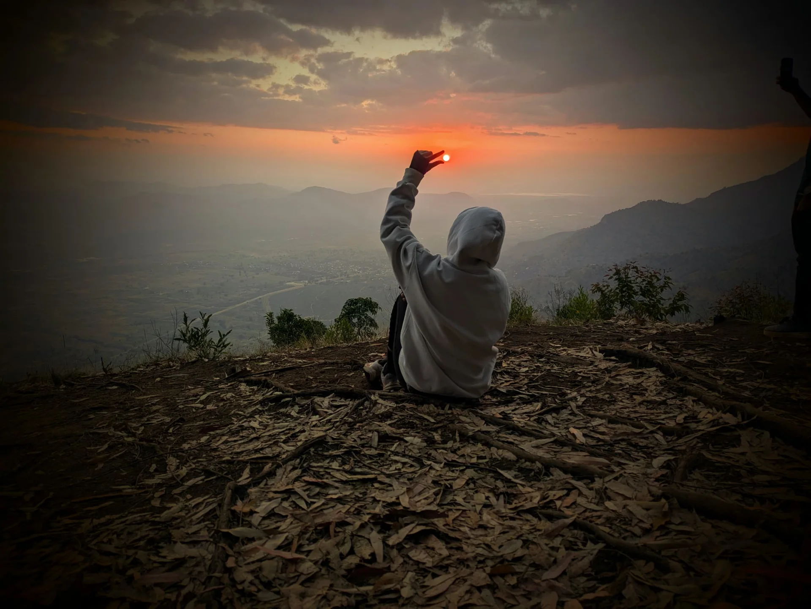
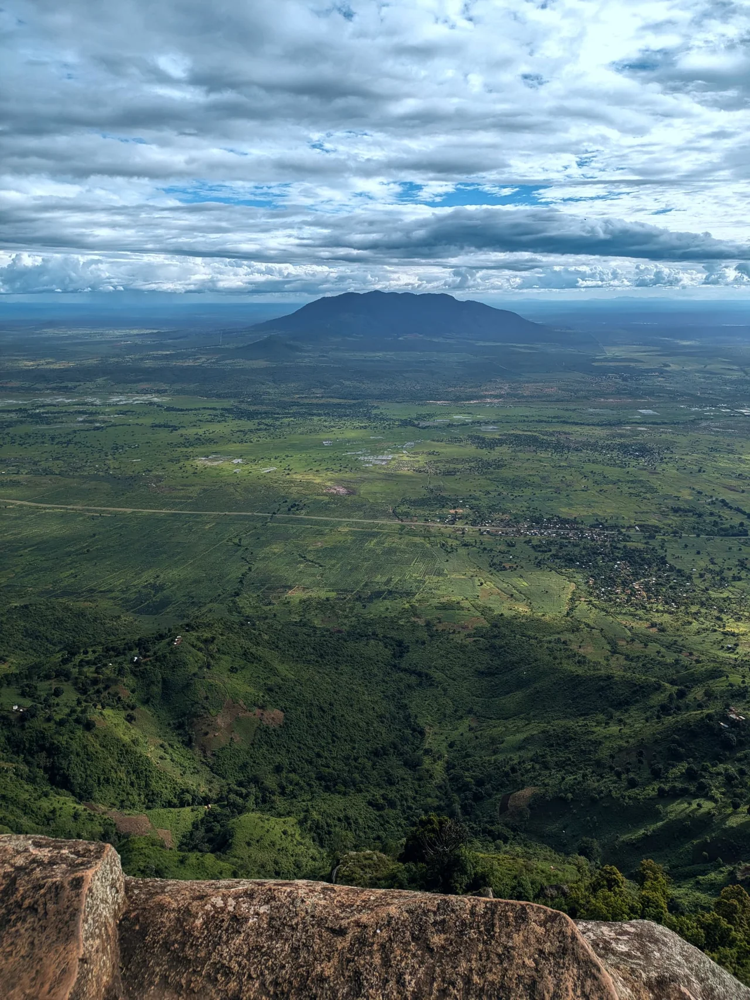
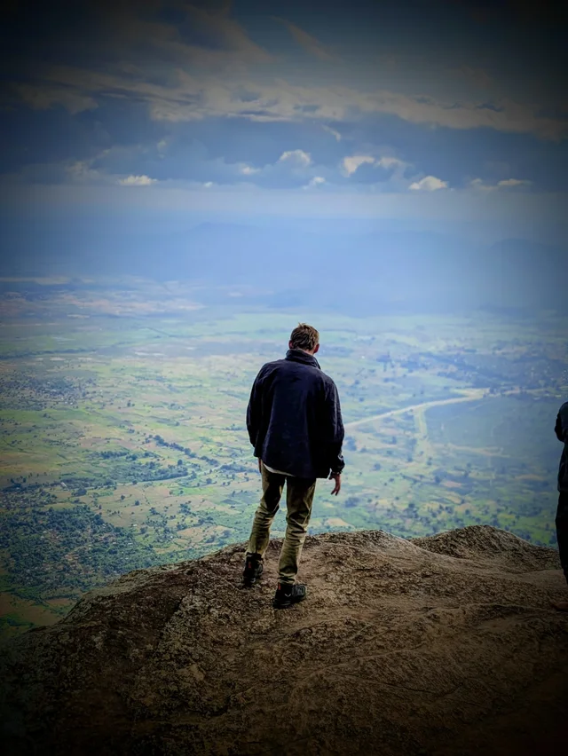
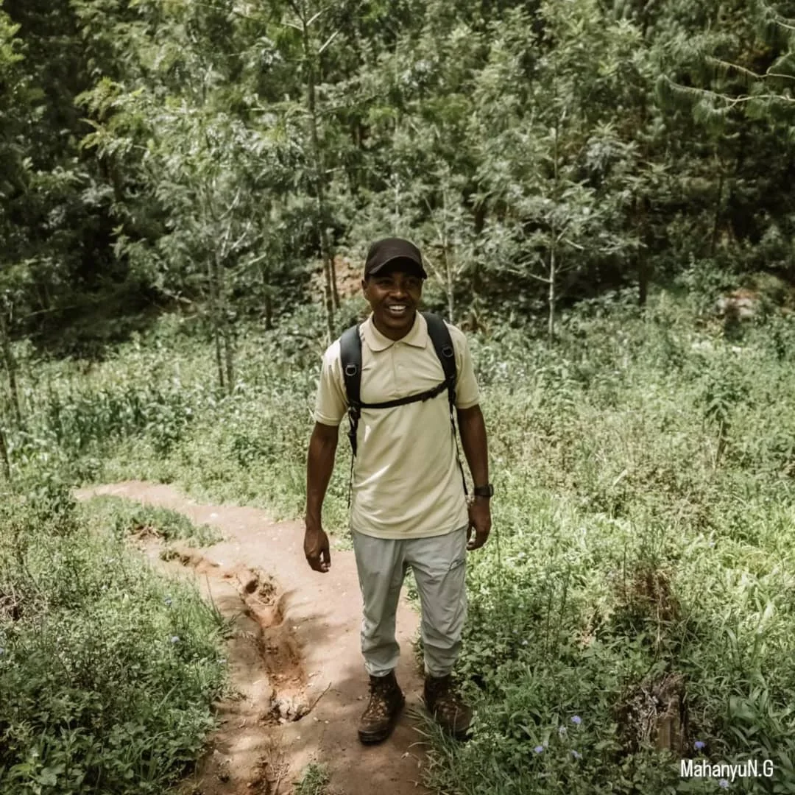

Village & Nature Day
↗Shaded trails, mountain life and time for the little things.
3–4 hours · EasyFrom $25 / person

Usambara Mountains · Tanzania
Mountain trails, forest walks and local stories.
Discover Usambara with Mahanyu.
Explore Usambara
Ancient forests, dramatic viewpoints and a warm local welcome. Guided walks that connect you to the real Usambara.
Shaded trails, mountain life and time for the little things.

02 / Follow the viewVillage paths and forest edges. A view worth walking for.

03 / A little further
A full day across ridges, farm paths and green valleys.
Every walk starts with a conversation. Get in touch to confirm your route, date and price.

A familiar face. A new adventure.Local guide. Real connections.
Personal walks through the mountains Mahanyu calls home.
Get to know Usambara through its trails, villages and quiet corners. Walk with a local guide who brings the landscape to life, with time to stop, look closer and enjoy the journey.
One afternoon or several days, an easy wander or a longer hike: your route can be shaped around your interests, the weather and your pace.
Say hello to MahanyuA glimpse of the journey
Your next good day
Tell Mahanyu when you’re visiting, how much time you have and what you’d love to see. Plan a route together.
Plan your trek by email mahanyu113@gmail.comMake it your own
Choose a relaxed village and nature walk, a viewpoint hike or a longer ridge walk. Share your interests and preferred pace, and Mahanyu can help you choose.
Yes. Get in touch about custom routes and multi-day treks. The route can be adapted to your time, interests and the weather.
Email your travel dates, group size and the walk you have in mind. Confirm availability, price, meeting point and what to bring directly with Mahanyu.